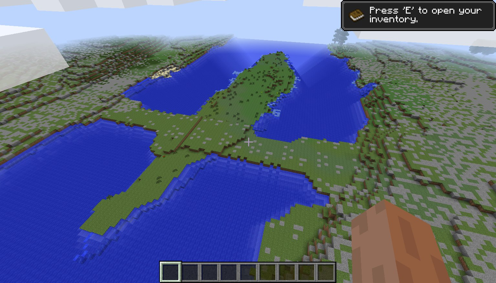
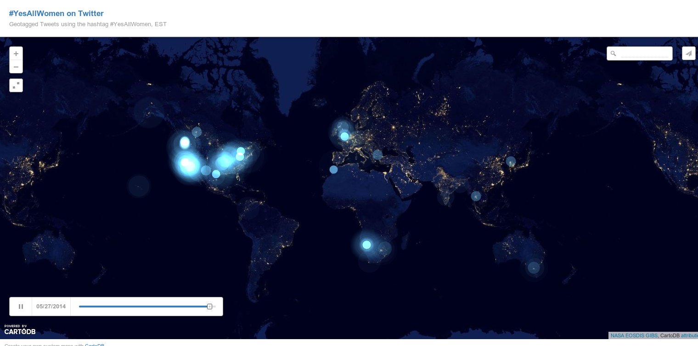
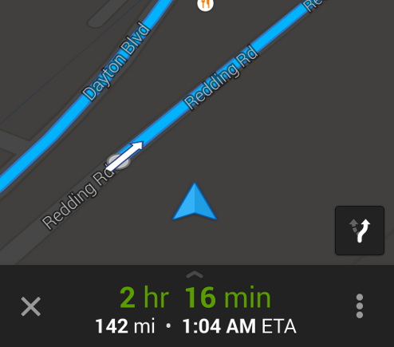

Intro To Web Maps
The current state of mapping in the digital age is amazing.
We can create educational and immersive experiences.

We can quickly and easily see the impact of current events.

..or use them to help get to that jazz gig quickly in Metro Atlanta that you're late for.

Maybe you already know about all of this stuff.
Or not.
Either way, you should be excited! If you're not I want to get you excited!
OK
So let's get started with some very very brief history.
Waaay back in 1993 the folks at Xerox PARC made a way to render maps as images.
A few years later MapQuest created a way for address matching and routes.
Several years later, in 2004, OpenStreetMap, an effort to produce freely licensed street maps started.
Then a year later, Google brings us Google maps, which arguably, started an explosion of interest in web maps.
I know I skipped a ton of stuff from 1996-2004, but I tried to hit the really big major points. We can talk about it later if you want. It's interesting.
Anyway, so where are we now?
JavaScript, Leaflet, Google Maps, GeoJSON, TopoJSON, ArcJSON, Shapefiles, OpenStreetMap, Geolocation, Proj4J, GDAL, CartoDB, GeoCouch, Terraformer, CartoCSS, Mapbox, QGIS, ArcGIS, GeoServer, D3, SVG, HTML5, geocoding, projections, PostGIS, map tiles, slippy maps, choropleths, voronoi diagrams
Ah! OK, so yeah. That's a lot. But I just want to make a web map? Where can I start?
Like, what if I just had a bunch of addresses, and I wanted to put them on a map, what's the absolute easiest way to do that?
One really nice online service is CartoDB. It makes all of this really easy.
All you literally have to do is upload some data with some kind of geographic info like addresses or zip codes.